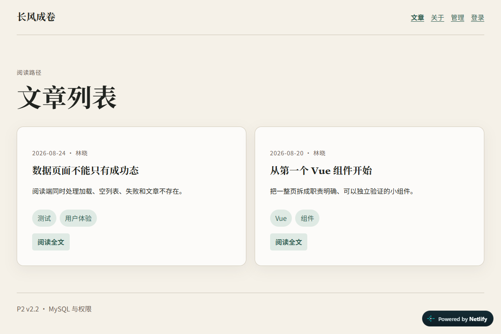
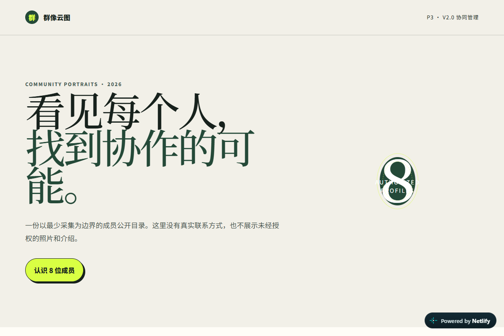
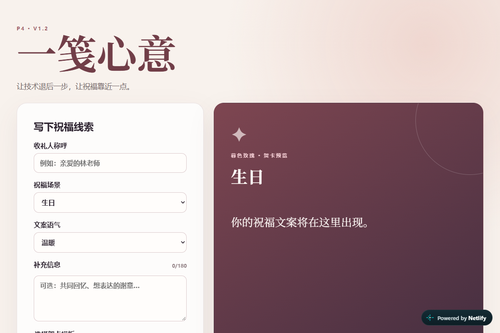
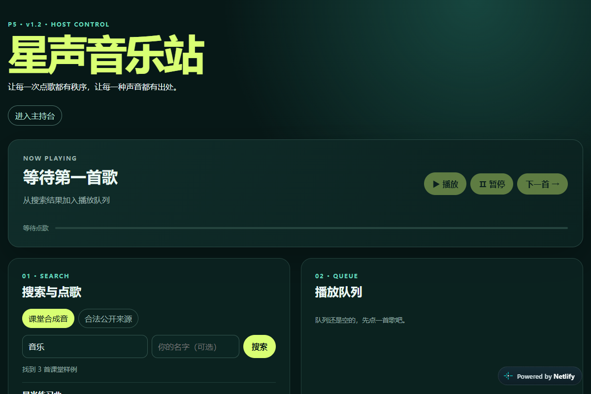

软件技术专业学生 · 前端开发学习者
我的学校 · 我的班级
HTML5、CSS3、JavaScript，正在学习 Git、数据库与网站部署。
在校学习
珠海
请填写可公开的联系方式
请填写自己的学校地址
请填写学校与专业 在读
学习网页开发，用项目记录成长。
项目内容：制作自己的网页，展示资料与作品，记录修改、测试与发布过程。
以下为教学示例，完成后可替换为自己的作品。

文章展示、接口与数据库。

内容发布与社区互动。

卡片制作与作品分享。

网页音频与交互实践。